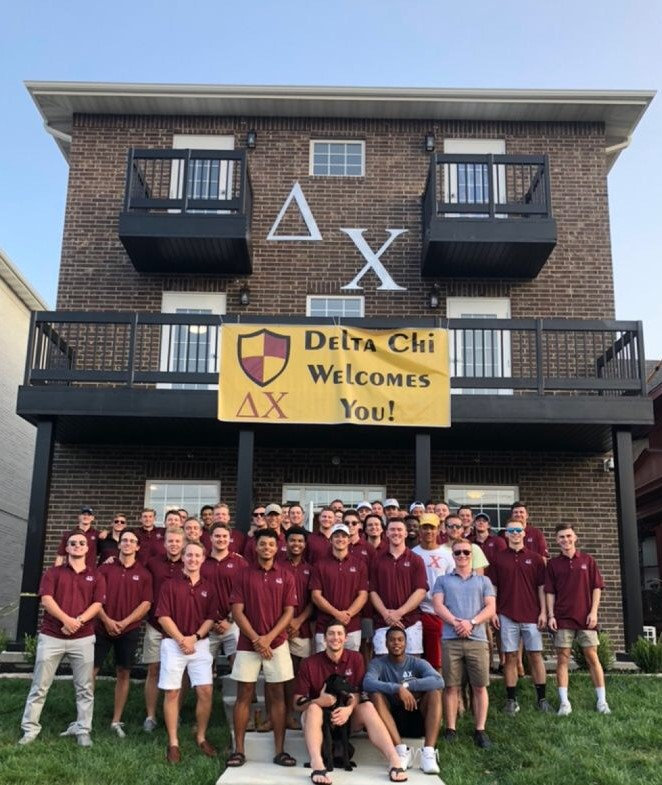

In 1890 as a Law Fraternity at Cornell University, Delta Chi has evolved into an international social fraternity with chapters all over - at Missouri State University, we, the men of the Delta Chi Fraternity, pride ourselves in giving students a method of getting involved in the campus and surrounding community. We prepare our members for the world after their time at Missouri State. Our promise is to give our student members a place to learn, grow, and succeed as young men.
